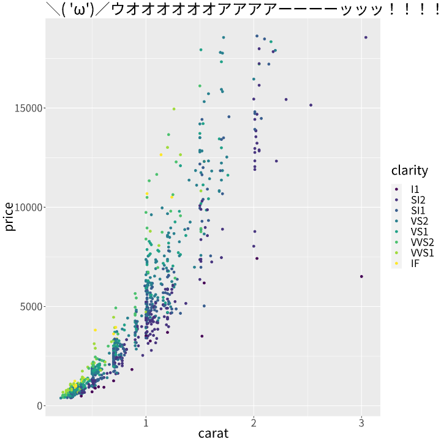

Overview
What is WebGPU?
WebGPU is an API that exposes the capabilities of GPU hardware.
What is wgpu?
As the name indicates, the wgpugd package uses wgpu, a pure-Rust implementation of the WebGPU standard. wgpu is what’s behind the WebGPU support of Firefox and Deno, and is widely used over the Rust’s graphics ecosystem.
Wait, Rust…? Can we use Rust in R??
Yes! extendr is the Rust framework for interacting with R.
Why WebGPU for R?
The main motivation is to add post-effect to graphics with WebGPU Shader Language (WGSL). But, of course, the power of GPU should simply contribute to high performance!
Installation
You can install the development version of wgpugd like so:
devtools::install_github("yutannihilation/wgpugd")Usages
⚠️ wgpugd is currently at its verrry early stage of the development! ⚠️
library(wgpugd)
library(ggplot2)
#> Warning in register(): Can't find generic `scale_type` in package ggplot2 to
#> register S3 method.
file <- knitr::fig_path('.png')
wgpugd(file, 10, 10)
set.seed(10)
dsamp <- diamonds[sample(nrow(diamonds), 1000), ]
ggplot(dsamp, aes(carat, price)) +
geom_point(aes(colour = clarity))
dev.off()
#> png
#> 2
knitr::include_graphics(file)
References
- wgpugd uses extendr, a Rust extension mechanism for R, both to communicate with the actual graphics device implementation in Rust from R, and to access R’s graphics API from Rust.
- If you are curious about developing a Rust program with wgpu, I’d recommend Learn Wgpu to get started.
- lyon is a library for “path tessellation,” which is necessary to draw lines on GPU.